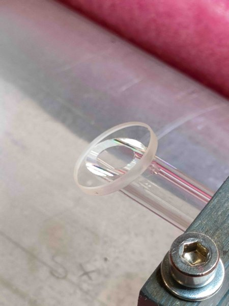

Source:
https://www.repairfaq.org/sam/laser/Cristiano_Perruccis_Home-Built_HeNe_Laser_1/fusedquartzwindowattachedtotubeend.html
· Original site:
repairfaq.org
· Unaltered mirror with a
companion guide
<< Previous
Index
Next >>
Fused Quartz Window Attached to Tube End

Photo album created with
Web Album Generator